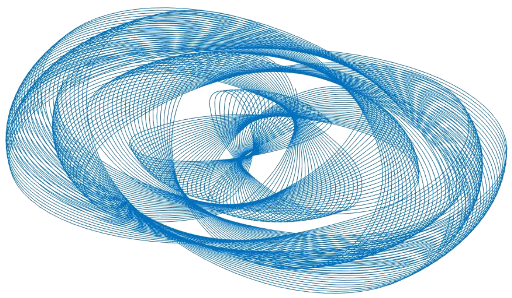
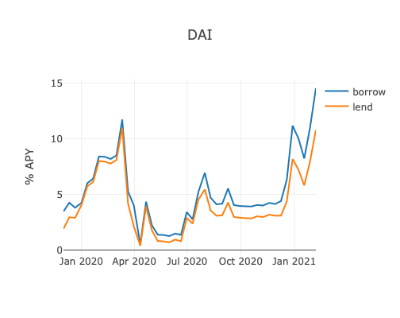
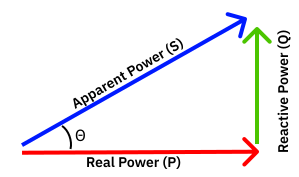
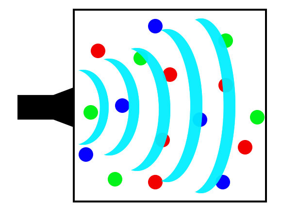
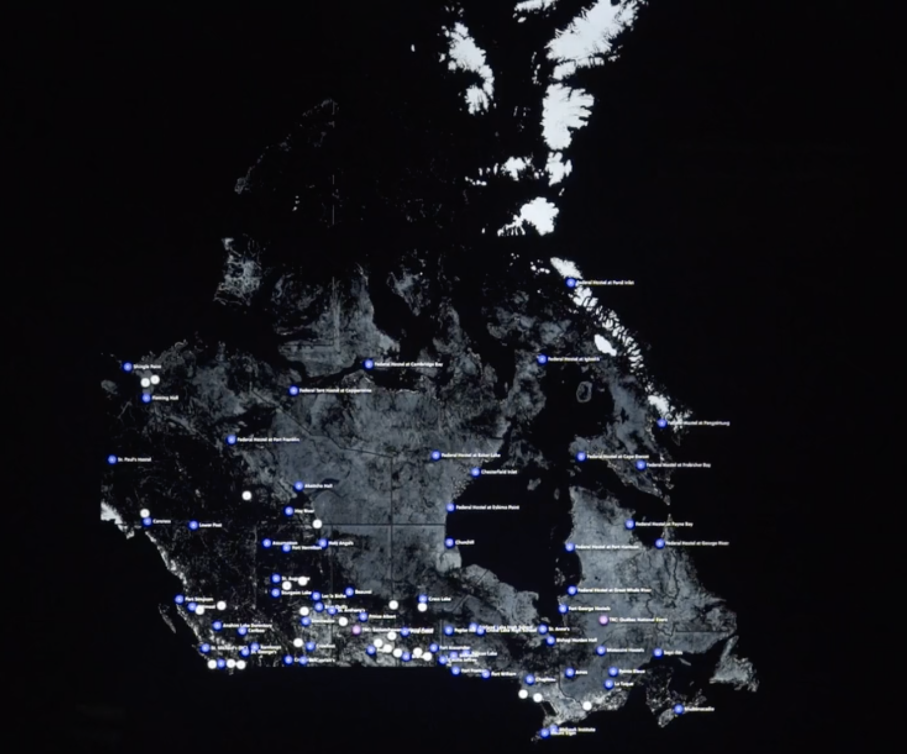
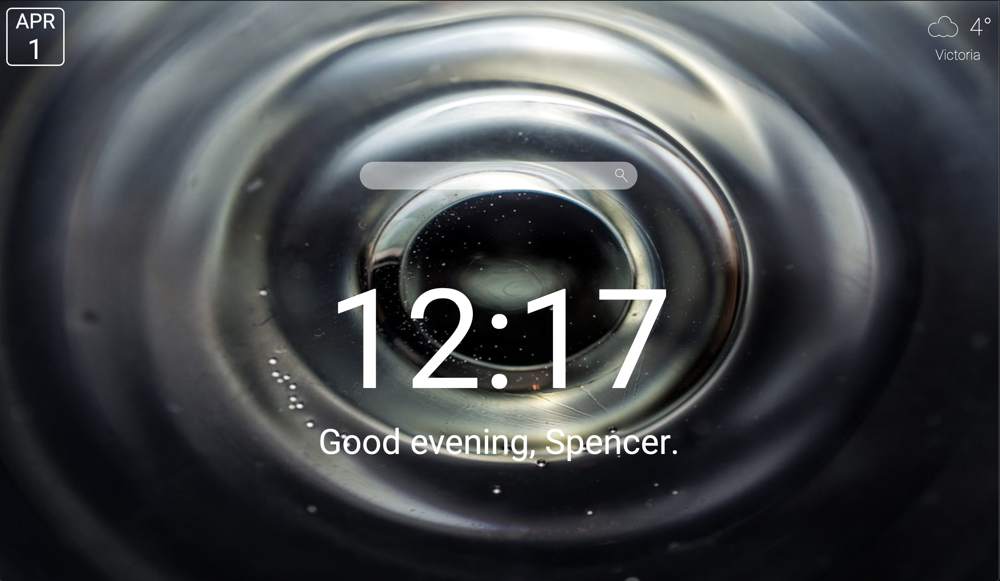

Spencer Perkins
About
Engineering Physics
- Pendulum Harmonograph Art
- Autonomous Robot Competition
- Compound Finance Crypto Market Analysis
- Natural Power Factor Report
- CAN Bus Steering Wheel
- Acoustic Hydrogen Sensor
- Raspberry Pi Foreign Object Detection
- Interactive Wall
- Loan Application
- Homepage Dashboard
-

Pendulum Harmonograph ArtA pendulum harmonograph using 2, 3D pendulums to produce some beautiful art. Equations of motion are solved using Lagrangian mechanics to create the simulation. Within the simulation initial conditions can be manually set, and the model can be animated in time, and through the harmonics.
Learn more -
 Autonomous Robot CompetitionDesigned and built a fully autonomous robot in a team of 4 to navigate a course, going around obstacles, over gaps, and across bridges while picking up objects along the way. Our robot finished 2nd place among 16 teams, and scored the most points overall. Learn more
Autonomous Robot CompetitionDesigned and built a fully autonomous robot in a team of 4 to navigate a course, going around obstacles, over gaps, and across bridges while picking up objects along the way. Our robot finished 2nd place among 16 teams, and scored the most points overall. Learn more -

Compound Finance Crypto Market AnalysisA webpage to show Compound Finance's history cryptocurrency APY for their different markets. Learn more
-

Natural Power Factor ReportA report I wrote at BC Hydro that recommends a new method that electrical utilities should use to accurately calculate the natural power factor in their electrical distribution system. Learn more
-
 CAN Bus Steering WheelImplemented a CAN bus microcontroller communication system within UBC Supermileage's electric UrbanConcept vehicle. This acts as the brains of the vehicle allowing critical information transfer. Also designed the steering wheel including electrical, mechanical and software components to integrate into the CAN bus giving the driver vehicle status information displayed on a screen. Learn more
CAN Bus Steering WheelImplemented a CAN bus microcontroller communication system within UBC Supermileage's electric UrbanConcept vehicle. This acts as the brains of the vehicle allowing critical information transfer. Also designed the steering wheel including electrical, mechanical and software components to integrate into the CAN bus giving the driver vehicle status information displayed on a screen. Learn more -

Acoustic Hydrogen SensorCapstone project where we created an acoustic sensor system capable of determining the concentration of hydrogen in a gas mixture in the anode of a hydrogen fuel cell. This project is a cost effective solution to increase fuel cell efficiency and life expectancy by finding optimal purge times. Learn more
-
 Raspberry Pi Foreign Object DetectionImplemented foreign object detection using background subtraction on a Raspberry Pi with openCV. This is useful to detect manufacturing defects in a production line; for an extremely memory efficient security system to only record when a foreign object is detected; and in many other cases. Learn more
Raspberry Pi Foreign Object DetectionImplemented foreign object detection using background subtraction on a Raspberry Pi with openCV. This is useful to detect manufacturing defects in a production line; for an extremely memory efficient security system to only record when a foreign object is detected; and in many other cases. Learn more -

Interactive WallMac OS developer on the team that created the interactive wall at UBC to help educate the public on the history of Indian residential schools in Canada. The project runs across 3, 100" touch screens, with a Raspberry Pi behind each screen sending touch data to the iMac running the installation. It uses a caching server built with node.js and PostgreSQL to quickly serve the media. Learn more
-
Loan ApplicationA loan calculator to help educate users on how loans work, and help estimate how much a loan may cost. This project also includes a baseplate for an application for creating, managing and paying off peer to peer loans. Learn more
-

Homepage DashboardA simple homepage dashboard similar to momentum but lighter weight that will work for all browsers. Includes a new background image on every load, personal greeting message, time of day, location based weather, a search bar, and the date. Learn more